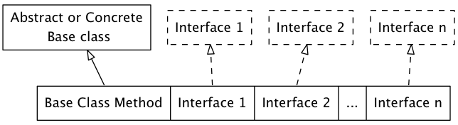

Chapter 09: Interfaces
Table of Contents
Interfaces
- 在java中, interface和abstract class的设计,提供了更好的将"接口"和"实现"分离的 方式
- abstract其实是介于普通class和interface之间的一种"半class半interface"
Abstract classes and methods
- 要说起来abstract是"半class半interface":
- 这个"半class"是说它长得像class, 因为用class关键字么
- 这个"半interface"是说它的实际想要做的事情: abstract class么,其实就是想在 根儿上定义出接口来,而不是实现
- java中为那些只提供接口的函数起了个名字叫abstract method, 需要abstract修饰
- 包含一个abstract method的类就叫做abstract class,也需要abstract修饰
- 既然abstract class包含了没有实现体的abastract method,那么对abstract class 的对象化也是没有意义的.会最终失败.
- 下面是一个abstract class的例子,并不是所有的abstract class的成员函数都必须是
abstract的. 但是abstract class的第一层的继承者们,必须实现所有的abstract函数
package lang.tij4.interfaces.music4; import lang.tij4.polymorphism.music.Note; abstract class Instrument { private int i; // Storage allocated for each public abstract void play(Note n); public String what() { return "Instrument"; } public abstract void adjust(); } class Wind extends Instrument { public void play(Note n) { System.out.println("Wind.play()" + n); } public String what() { return "Wind"; } public void adjust() {} } class Percussion extends Instrument { public void play(Note n) { System.out.println("Percussion.play()" + n); } public String what() { return "Percussion"; } public void adjust() {} } class Stringed extends Instrument { public void play(Note n) { System.out.println("Stringed.play()" + n); } public String what() { return "Stringed"; } public void adjust() {} } class Brass extends Wind { public void play(Note n) { System.out.println("Brass.play() " + n); } } class Woodwind extends Wind { public void play(Note n) { System.out.println("Woodwind.play() " + n); } public String what() { return "Woodwind"; } } public class Music4 { // Doesn't care about type, so new types // added to the system still work right static void tune(Instrument i) { i.play(Note.MIDDLE_C); } static void tuneAll(Instrument[] e) { for (Instrument i : e) { tune(i); } } public static void main(String[] args) { // Upcasting during addition to the array Instrument[] orchestra = { new Wind(), new Percussion(), new Stringed(), new Brass(), new Woodwind() }; tuneAll(orchestra); } } //////////////////////////////////////////////////// // <===================OUTPUT===================> // // Wind.play()MIDDLE_C // // Percussion.play()MIDDLE_C // // Stringed.play()MIDDLE_C // // Brass.play() MIDDLE_C // // Woodwind.play() MIDDLE_C // ////////////////////////////////////////////////////
Interfaces
- interface比abstract class更近了一步: abstract class还可以有一部分非abstract 的函数,但是interface的所有成员都自动是abstract method
- interface要求使用它的类,必须完成某些函数的函数体部分,这是一种强制protocol式设计
- interface也可以有field,但是都"暗中"加了static和final
- interface当然要有method,而且所有的method都"暗中"加了public(否则人家怎么使用)
- interface使用implements而不是extends
- 下面的例子赤裸裸的揭露了其实class->abstract class->interface其实没有所谓的类
型的不同,他们只是分离"接口"和"实现"力度不同的类!,他们都是类, interface也是可以
被upcast的
package lang.tij4.interfaces.music5; import lang.tij4.polymorphism.music.Note; interface Instrument { // Compile-time constant; int VALUE = 5; // static & final // Cannot have method definitions: void play(Note n); // Automatically public void adjust(); } class Wind implements Instrument { public void play(Note n) { System.out.println(this + ".play() " + n); } public String toString() { return "Wind"; } public void adjust() { System.out.println(this + ".adjust()"); } } class Percussion implements Instrument { public void play(Note n) { System.out.println(this + ".play() " + n); } public String toString() { return "Percussion"; } public void adjust() { System.out.println(this + ".adjust()"); } } class Stringed implements Instrument { public void play(Note n) { System.out.println(this + ".play() " + n); } public String toString() { return "Stringed"; } public void adjust() { System.out.println(this + ".adjust()"); } } class Brass extends Wind { public String toString() { return "Brass"; } } class Woodwind extends Wind { public String toString() { return "Woodwind"; } } public class Music5 { // Doesn't care about type, so new types // added to the system still work right static void tune(Instrument i) { i.play(Note.MIDDLE_C); } static void tuneAll(Instrument[] e) { for (Instrument i : e) { tune(i); } } public static void main(String[] args) { // Upcasting during addition to the array Instrument[] orchestra = { new Wind(), new Percussion(), new Stringed(), new Brass(), new Woodwind() }; tuneAll(orchestra); } } //////////////////////////////////////////////////// // <===================OUTPUT===================> // // Wind.play() MIDDLE_C // // Percussion.play() MIDDLE_C // // Stringed.play() MIDDLE_C // // Brass.play() MIDDLE_C // // Woodwind.play() MIDDLE_C // ////////////////////////////////////////////////////
Complete decoupling
- 如果你决定了使用继承,那么你有很多的烦恼: 比被限制使用这条线上的class或者 subclass, 如果你使用了不是override的函数,那么很多magic就无法实现了
- 而接口则是大救星,它可以说极大的解除了继承的这种限制,让你写出复用性更强的代
码, 为了说明接口的这个特性,我们先看一个例子
package lang.tij4.interfaces.classprocessor; import java.util.Arrays; class Processor { public String name() { return getClass().getSimpleName(); } Object process(Object input) { return input; } } class Upcase extends Processor { String process(Object input) { // Covariant return return ((String)input).toUpperCase(); } } class Downcase extends Processor { String process(Object input) { return ((String)input).toLowerCase(); } } class Splitter extends Processor { String process(Object input) { // The split() argument divides a String into pieces: return Arrays.toString(((String)input).split(" ")); } } public class Apply { public static void process(Processor p, Object s) { System.out.println("Using Processor " + p.name()); System.out.println(p.process(s)); } public static String s = "Disagreement with beliefs is by definition incorrect"; public static void main(String[] args) { process(new Upcase(), s); process(new Downcase(), s); process(new Splitter(), s); } } ////////////////////////////////////////////////////////////////// // <===================OUTPUT===================> // // Using Processor Upcase // // DISAGREEMENT WITH BELIEFS IS BY DEFINITION INCORRECT // // Using Processor Downcase // // disagreement with beliefs is by definition incorrect // // Using Processor Splitter // // [Disagreement, with, beliefs, is, by, definition, incorrect] // //////////////////////////////////////////////////////////////////
- 在这个例子中基类Processor中有name()和process()两个函数:
- name()来返回实际调用的类是哪个类
- process()是接收一个数据(Object类型),处理一下然后返回(还是Object类型).
- Processor的所有的子类都覆写了process()这个函数(但是返回值变成了String,而不 再是Object,这是允许的,这叫covariant)
- Apply.process()的用法很特别,它根据传入的class不同(都是Processor的子类),而有
不同的行为. 这种用法叫做Strategy design pattern. Upcase, Downcase, Splitter
都叫做一中"Strategy', 并且他们都自带"解决方案": process()
A method that behaves differently depending on the argument object that you pass it
- 下面,我们继续深化这例子,比如我下面的例子就介绍了一个Filter类，这个类的函数和
Processor类是一样的(都是name(), process())
package lang.tij4.interfaces.filters; public class Waveform { private static long counter; private final long id = counter++; public String toString() { return "Waveform " + id; } } package lang.tij4.interfaces.filters; public class Filter { public String name() { return getClass().getSimpleName(); } public Waveform process(Waveform input) { return input; } } package lang.tij4.interfaces.filters; public class LowPass extends Filter { double cutoff; public LowPass(double cutoff) { this.cutoff = cutoff; } public Waveform process(Waveform input) { return input; // Dummy processing } } package lang.tij4.interfaces.filters; public class HighPass extends Filter { double cutoff; public HighPass(double cutoff) { this.cutoff = cutoff; } public Waveform process(Waveform input) { return input; } } package lang.tij4.interfaces.filters; public class BandPass extends Filter { double lowCutoff, highCutoff; public BandPass(double lowCut, double highCut) { lowCutoff = lowCut; highCutoff = highCut; } public Waveform process(Waveform input) { return input; } }
- Apply.process()可以处理Processor类,那么可不可以处理Filter类呢?答案肯定是不可以 Apply.process()的参数明确的指出了其第一个必须是Processor类型,而Filter和 Processor只是接口一样,没有共同的继承关系,所以Filter类无法使用Apply.process()
- 这就是使用继承的坏处,使用继承,就把Processor的作用限制死了,别的拥有相同接口的
类必须继承你,才能使用你的一些便利措施(比如Apply.process()). 而interface就没有
这个限制, 下例中,我们将Processor使用接口重写,如下
package lang.tij4.interfaces.interfaceprocessor; public interface Processor { String name(); Object process(Object input); } package lang.tij4.interfaces.interfaceprocessor; public class Apply { public static void process(Processor p, Object s) { System.out.println("Using Processor " + p.name()); System.out.println(p.process(s)); } }
- 你会发现,interface的可用性比继承强很多.写成接口以后,首先可以让client端只要
"implements Processor",就可以使用Apply.process(), 如下
package lang.tij4.interfaces.interfaceprocessor; import java.util.Arrays; public abstract class StringProcessor implements Processor { public String name() { return getClass().getSimpleName(); } public abstract String process(Object input); public static String s = "If she weighs the same as a duck, she's made of wood"; public static void main(String[] args) { Apply.process(new Upcase(), s); Apply.process(new Downcase(), s); Apply.process(new Splitter(), s); } } class Upcase extends StringProcessor { public String process(Object input){ // Covariant return return ((String)input).toUpperCase(); } } class Downcase extends StringProcessor { public String process(Object input) { return ((String)input).toLowerCase(); } } class Splitter extends StringProcessor { public String process(Object input) { return Arrays.toString(((String) input).split(" ")); } } /////////////////////////////////////////////////////////////////////// // <===================OUTPUT===================> // // Using Processor Upcase // // IF SHE WEIGHS THE SAME AS A DUCK, SHE'S MADE OF WOOD // // Using Processor Downcase // // if she weighs the same as a duck, she's made of wood // // Using Processor Splitter // // [If, she, weighs, the, same, as, a, duck,, she's, made, of, wood] // ///////////////////////////////////////////////////////////////////////
- 如果你的代码无法"implements Processor"(比如代码来自某个lib, 而不是你自己创
造的), 那么写成Processor接口以后,你可以把你的Filter接口转换成Processor接口
这叫做Adapter design pattern
In Adapter desin pattern, you write code to take the interface that you have and produce the interface that your need
package lang.tij4.interfaces.interfaceprocessor; import lang.tij4.interfaces.filters.BandPass; import lang.tij4.interfaces.filters.Filter; import lang.tij4.interfaces.filters.HighPass; import lang.tij4.interfaces.filters.LowPass; import lang.tij4.interfaces.filters.Waveform; class FilterAdapter implements Processor { Filter filter; public FilterAdapter(Filter filter) { this.filter = filter; } public String name() { return filter.name(); } public Waveform process(Object input) { return filter.process((Waveform)input); } } public class FilterProcessor { public static void main(String[] args) { Waveform w = new Waveform(); Apply.process(new FilterAdapter(new LowPass(1.0)), w); Apply.process(new FilterAdapter(new HighPass(2.0)), w); Apply.process(new FilterAdapter(new BandPass(3.0, 4.0)), w); } } //////////////////////////////////////////////////// // <===================OUTPUT===================> // // Using Processor LowPass // // Waveform 0 // // Using Processor HighPass // // Waveform 0 // // Using Processor BandPass // // Waveform 0 // ////////////////////////////////////////////////////
"Multiple inheritance" in Java
- java中因为有了interface,就不用在受c++里面的多重继承之苦了: 只继承一个base
class, 其他的接口可以通过interface来继承

- 下面我们来看一个多个interface的例子
package lang.tij4.interfaces; interface CanFight { void fight(); } interface CanSwim { void swim(); } interface CanFly { void fly(); } class ActionCharacter { public void fight() {} } class Hero extends ActionCharacter implements CanFight, CanSwim, CanFly { public void swim() {} public void fly() {} } public class Adventure { public static void t(CanFight x) { x.fight(); } public static void u(CanSwim x) { x.swim(); } public static void v(CanFly x) { x.fly(); } public static void w(ActionCharacter x) { x.fight(); } public static void main(String[] args) { Hero h = new Hero(); t(h); // Treat it as a CanFight u(h); // Treat it as a CanSwim v(h); // Treat it as a CanFly w(h); // Treat it as an ActionCharacter } }
- 我们可以看到ActionCharacter里面有fight()的定义和CanFight里面的是一样的,所以 即便Hero没有自己实现一个fight(),因为CanFight里面的存在,导致了它可以初始化
- 从上面的例子来看,h可以被upcast成非常多种的类型,这正是拜interface所赐, 一般来
说interface有两个重要作用:
- 就是可以用来"多继承', upcast成多种类型
- 像abstract class一样,防止client用户生成object
- 除非base class里面一定要有一个定义,否则,我们尽量选择使用interface而不是abstract class
Extending an interface with inheritance
- interface之间,也可以相互的继承,从而提供更复杂的接口
package lang.tij4.interfaces; interface Monster { void menace(); } interface DangerousMonster extends Monster { void destroy(); } interface Lethal { void kill(); } class DragonZilla implements DangerousMonster { public void menace() {} public void destroy() {} } interface Vampire extends DangerousMonster, Lethal { void drinkBlood(); } class VeryBadVampire implements Vampire { public void menace() {} public void destroy() {} public void kill() {} public void drinkBlood() {} } public class HorrorShow { static void u(Monster b) { b.menace(); } static void v(DangerousMonster d) { d.menace(); d.destroy(); } static void w(Lethal l) { l.kill(); } public static void main(String[] args) { DangerousMonster barney = new DragonZilla(); u(barney); v(barney); Vampire vlad = new VeryBadVampire(); u(vlad); v(vlad); w(vlad); } }
Name collisions when combining Interfaces
- 前面的例子中CanFight和ActionCharacter都有fight()但是接口定义一致,
所以也没有什么大的问题. 如果接口定义不一致,那么就会引入很多问题,如下
例. 我们一定要尽量规避这种情况的发生
package lang.tij4.interfaces; interface I1 {void f();} interface I2 {int f(int i);} interface I3 {int f();} class C { public int f() { return 1; } } class C2 implements I1, I2 { public void f() {} public int f(int i){ // overloaded return 1; } } class C3 extends C implements I2 { public int f(int i) { // overloaded return 1; } } class C4 extends C implements I3 { // Identical, no problem: public int f() { return 1; } } // Method differ only by return type: // NOT work: attempting to use incompatible return type //! class C5 extends C implements I1 {} //! interface I4 extends I1, I3 {} public class InterfaceCollision { }
Adapting to an interface
- interface的一个巨大好处就是:可以允许对某个interface能同时有许多不同的实现, 这样以来method的参数可以设成一个interface,你implement了这个interface就可以 利用这个method的价值:这也就是Strategy design pattern的精髓
- 下面的例子中Scanner class把Readable interface作为一个参数,这个参赛在jdk的
其他地方都没有用到,它的唯一作用就是Scanner想让自己变的更加通用,你只需要让你的
class implements Readable,那么就能使用Scanner的功能
package lang.tij4.interfaces; import java.nio.CharBuffer; import java.util.Random; import java.util.Scanner; public class RandomWords implements Readable { private static Random rand = new Random(47); private static final char[] capitals = "ABCDEFGHIJKLMNOPQRSTUVWXYZ".toCharArray(); private static final char[] lowers = "abcdefghijklmnopqrstuvwxyz".toCharArray(); private static final char[] vowels = "aeiou".toCharArray(); private int count; public RandomWords(int count) { this.count = count; } public int read(CharBuffer cb) { if (count-- == 0) { return -1; // Indicates end of input } cb.append(capitals[rand.nextInt(capitals.length)]); for (int i = 0; i < 4; i++) { cb.append(vowels[rand.nextInt(vowels.length)]); cb.append(lowers[rand.nextInt(lowers.length)]); } cb.append(" "); return 10; // Number of characters appended } public static void main(String[] args) { Scanner s = new Scanner(new RandomWords(10)); while (s.hasNext()) { System.out.println(s.next()); } } } //////////////////////////////////////////////////// // <===================OUTPUT===================> // // Yazeruyac // // Fowenucor // // Goeazimom // // Raeuuacio // // Nuoadesiw // // Hageaikux // // Ruqicibui // // Numasetih // // Kuuuuozog // // Waqizeyoy // ////////////////////////////////////////////////////
- 如果你已经有如下的一个函数RandomDoubles,其并没有实现接口Readable
package lang.tij4.interfaces; import java.util.Random; public class RandomDoubles { private static Random rand = new Random(47); public double next() { return rand.nextDouble(); } public static void main(String[] args) { RandomDoubles rd = new RandomDoubles(); for (int i = 0; i < 7; i++) { System.out.println(rd.next() + " "); } } } //////////////////////////////////////////////////// // <===================OUTPUT===================> // // 0.7271157860730044 // // 0.5309454508634242 // // 0.16020656493302599 // // 0.18847866977771732 // // 0.5166020801268457 // // 0.2678662084200585 // // 0.2613610344283964 // ////////////////////////////////////////////////////
- 想让这个RandomDoubles能够为Scanner所用,所要做的也不过是将已有的interface
转换成自己想要的interface,也就是Adapter design pattern的精髓, 前面我们只是
让一个新的AdapterInterface implements了老的interface, 如果我们想利用RandomDoubles
的功能,那么我们可以设计一个类extends RandomDoubles并且implements Readable
package lang.tij4.interfaces; import java.nio.CharBuffer; import java.util.Scanner; public class AdaptedRandomDoubles extends RandomDoubles implements Readable { private int count; public AdaptedRandomDoubles(int count) { this.count = count; } public int read(CharBuffer cb) { if (count-- == 0) { return -1; } String result = Double.toString(next()) + " "; cb.append(result); return result.length(); } public static void main(String[] args) { Scanner s = new Scanner(new AdaptedRandomDoubles(7)); while (s.hasNextDouble()) { System.out.println(s.nextDouble() + " "); } } } //////////////////////////////////////////////////// // <===================OUTPUT===================> // // 0.7271157860730044 // // 0.5309454508634242 // // 0.16020656493302599 // // 0.18847866977771732 // // 0.5166020801268457 // // 0.2678662084200585 // // 0.2613610344283964 // ////////////////////////////////////////////////////
Fields int interfaces
- 只需要记住在interface里面的data都是"暗中"加了如下:
- public
- static:所以这些数据不是interface的一部分,它们存在static storage
- final
Initializing fields in interfaces
- interface里面的data不能不初始化,但是可以使用non-constant expression来进行初始化
package lang.tij4.interfaces; import java.util.Random; public interface RandVals { Random RAND = new Random(47); int RANDOM_INT = RAND.nextInt(10); long RANDOM_LONG = RAND.nextLong() * 10; float RANDOM_FLOAT = RAND.nextLong() * 10; double RANDOM_DOUBLE = RAND.nextDouble() * 10; }
Nesting interfaces
- interface 也可以内嵌到其他的class里面,并且声明为private. 这种private的interface 外界除了使用getter,是无法访问的
- 还有很多其他的特性,看下例
package lang.tij4.interfaces.nesting; class A { interface B { void f(); } public class BImp implements B { public void f() {} } public class BImp2 implements B { public void f() {} } public interface C { void f(); } class CImp implements C { public void f() {} } private class CImp2 implements C { public void f() {} } private interface D { void f(); } private class DImpl implements D { public void f() {} } public class DImpl2 implements D { public void f() {} } public D getD() { return new DImpl2(); } private D dRdf; public void receiveD(D d) { dRdf = d; dRdf.f(); } } interface E { interface G { void f(); } // Redundant "public" public interface H { void f(); } void g(); // Can nt be private within an interface: //! private inferface I {} } public class NestingInterfaces { public class BImp implements A.B { public void f() {} } class CImp implements A.C { public void f() {} } // Cannot implement a private interface except // within that interface's defining class: //! class DImpl implements A.D { //! public void f() {} //! } class EImp implements E { public void g() {} } class EGImp implements E.G { public void f() {} } class EImp2 implements E { public void g() {} class EG implements E.G { public void f() {} } } public static void main(String[] args) { A a = new A(); // Can't access A.D //! A.D ad = a.getD(); // Doesn't return anything but A.D //! A.DImpl2 di2 = a.getD(); // Cannot access a member of the interface //! a.gtD().f(); // Only another A can do anything with getD(): A a2 = new A(); a2.receiveD(a.getD()); } }
Interfaces and factories
- interface和工厂模式是绝配,所谓工厂模式就是:不是直接调用ctor来产生object,而是使用factory
对象的一个函数来取得相应的object, 这样做的目的是为了隔离接口和实现. 如果没有工厂模式,那么
在定义的时候就要写上具体是哪种service,现在就可以写一个工厂,然后工厂返回什么就可以再替换:
In factory design pattern, instead of calling a constructor directly, you call a creation method on a factory object which produces an implementation of the interface
- 在java中,factory的"返回实现"的函数在定义的时候开业是interface,返回的时候再返回
implementation(这是covariant). 比如下面例子中Implementattion1Factory里面实
现的getService()在定义的时候是返回interface Service, 结果实现的时候,返回了class
Implementation1
package lang.tij4.interfaces; interface Service { void method1(); void method2(); } interface ServiceFactory { Service getService(); } class Implementation1 implements Service { Implementation1() {} // Package access public void method1() { System.out.println("Implementation1 method1"); } public void method2() { System.out.println("Implementation1 method2"); } } class Implementation1Factory implements ServiceFactory { public Service getService() { return new Implementation1(); } } class Implementation2 implements Service { Implementation2() {} // Package access public void method1() { System.out.println("Implementation2 method1"); } public void method2() { System.out.println("Implementation2 method2"); } } class Implementation2Factory implements ServiceFactory { public Service getService() { return new Implementation2(); } } public class Factories { public static void serviceConsumer(ServiceFactory fact) { Service s = fact.getService(); s.method1(); s.method2(); } public static void main(String[] args) { serviceConsumer(new Implementation1Factory()); // Implementations are completely interchangeable serviceConsumer(new Implementation2Factory()); } } //////////////////////////////////////////////////// // <===================OUTPUT===================> // // Implementation1 method1 // // Implementation1 method2 // // Implementation2 method1 // // Implementation2 method2 // ////////////////////////////////////////////////////
- 工厂模式还可以提高代码复用,比如下例中,如果Games里面是非常复杂的逻辑,那么使用工厂模式
可以大大的减少代码量,提高代码复用
package lang.tij4.interfaces; // A Game framework using Factory Methods interface Game { boolean move(); } interface GameFactory { Game getGame(); } class Checkers implements Game { private int moves = 0; private static final int MOVES = 3; public boolean move() { System.out.println("Checkers move " + moves); return ++moves != MOVES; } } class CheckersFactory implements GameFactory { public Game getGame() { return new Checkers(); } } class Chess implements Game { private int moves = 0; private static final int MOVES = 4; public boolean move() { System.out.println("Chess move " + moves); return ++moves != MOVES; } } class ChessFactory implements GameFactory { public Game getGame() { return new Chess(); } } public class Games { public static void playGame(GameFactory factory) { Game s = factory.getGame(); while(s.move()) { ; } } public static void main(String[] args) { playGame(new CheckersFactory()); playGame(new ChessFactory()); } } //////////////////////////////////////////////////// // <===================OUTPUT===================> // // Checkers move 0 // // Checkers move 1 // // Checkers move 2 // // Chess move 0 // // Chess move 1 // // Chess move 2 // // Chess move 3 // ////////////////////////////////////////////////////
Nested classes
- 如果我们的inner class不想和包括它的class进行联系,那么我们可以把inner class 声明称static, 声明成static以后,就不叫inner class了而叫nested classes
- 声明成static就改名是因为,一旦把inner class声明为static后,就不在保有"reference
to object of the outer classs". 那么就会导致如下两条新的特
性:
- 你不再需要outer class作为你的scope+"."来创建你的class
- 你不再有权利访问非static的outer class的成员变量成员函数
- inner class是不能有static成员的,nested则不同,它本身就是static的,肯定可以有
static的
package lang.tij4.innerclasses; public class Parcel11 { private static class ParcelContents implements Contents { private int i = 11; public int value() { return i; } } protected static class ParcelDestination implements Destination { private String label; private ParcelDestination(String whereTo) { label = whereTo; } public String readLabel() { return label; } // Nested classes can contains other static elements: public static void f() {} static int x = 10; static class AnotherLevel { public static void f() {} static int x = 10; } } public static Destination destination(String s) { return new ParcelDestination(s); } public static Contents contents() { return new ParcelContents(); } public static void main(String[] args) { Contents c = contents(); Destination d = destination("Tasmania"); } }
classes inside interfaces
- 我们前面说过,一个interface里面的所有的变量函数都默认public的
- 现在加上一条,interface内部的class都会加上static的, 所以interface里面声明的 class都是nested class. 声明成static是有道理的,因为interface里面是不能有实 现的.而static的部分只是使用了其namespace, 存放还是会放到static区域的
- 我们甚至可以在interface里面使用一个nested class,让这个nested class来implements
接口
package lang.tij4.innerclasses; public interface ClassInInterface { void howdy(); class Test implements ClassInInterface { public void howdy() { System.out.println("Howdy!"); } public static void main(String[] args) { new Test().howdy(); } } } ///////////////////////////////////////////////////////////// // bash-3.2$ ./runj.sh innerclasses/ClassInInterface\$Test // // --------Begin---------- // // // // <===================OUTPUT===================> // // Howdy! // // // // --------End------------ // /////////////////////////////////////////////////////////////
- 我们可以看到,使用的时候是A$B,而且在bash里面要写成A\$B
Reaching outward from a multiply nested class
- inner class嵌套的层次没有限制
package lang.tij4.innerclasses; class MNA { private void f() {} class A { private void g() {} public class B { void h() { g(); f(); } } } } public class MultiNestingAccess { public static void main(String[] args) { MNA mna = new MNA(); MNA.A mnaa = mna.new A(); MNA.A.B mnaab = mnaa.new B(); mnaab.h(); } }